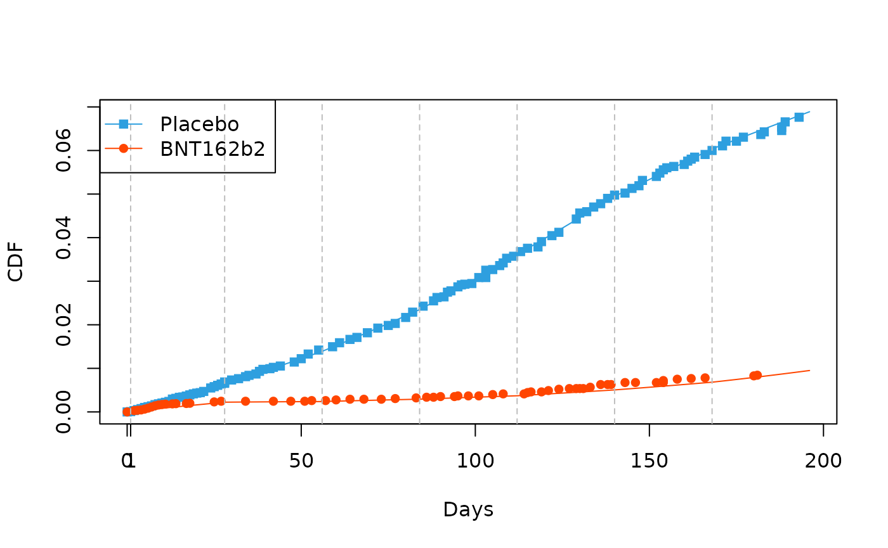

IPD version: Fay et al. (2025) supporting materials
IPD version
wwps-fay-ipd.RmdIn Fay et al. (2025) Vaccine Efficacy Estimands for Individual
Randomized Field Trials, the
approach is used. In this approach which utilizes the
“Weibull-Weibull-Positive Stable” model, the population (marginal)
Weibull is estimated, and then
is applied to those estimates to render the individual-level
(conditional) Weibull. This code recreates Figure 6 in that paper using
mpw calls.
The Weibull-Weibull-Positive Stable has a feature that the other mpw
frailty models do not have: that is, the marginal distribution (Weibull)
is the same as the conditional distribution (also Weibull). This enables
a strategy of estimating the mpw on the population data without
specifying an
(this is done in practice by setting alpha=1) and then from
there one can exactly calculate corresponding conditional models (and
HRs, and VEs, etc) using
applied to the marginal
and
estimates.
Explicitly, the hazard ratio for an individual, , can be produced by:
More details for the interested reader can be found in Swihart & Bandyopadhyay (2021), particularly in Section 2.1.
PS() Positive Stable Frailty Example
This is the , the marginalized piecewise Weibull CDF:
The CDF above is the result of integrating a piecewise weibull frailty model where the frailty has the PS() Positive Stable Frailty density:
We analyze data that looks similar to that of Figure 2 Thomas et al (2021) Safety and Efficacy of the BNT162b2 mRNA Covid-19 Vaccine through 6 Months.
We accomplished creating the dataset in this package,
ipd_data by using the R package IPDfromKM.
We load the data and do a couple of quick checks before proceeding with the core of our example.
library(survminer)
library(survival)
library(mpw)
## This data resembles Figure 2 in Thomas et al
## https://pubmed.ncbi.nlm.nih.gov/34525277/
data(ipd_data)
dim(ipd_data)
#> [1] 44939 3
head(ipd_data)
#> time status treat
#> 1 0.5 0 0
#> 2 1.0 1 0
#> 3 1.0 1 0
#> 4 1.5 0 0
#> 5 1.5 0 0
#> 6 2.0 1 0
fit <- survfit(Surv(time, status) ~ treat,
data = ipd_data)
## zoomed in, inset, 11days
# Visualize with survminer
ggsurvplot(fit, data = ipd_data, risk.table = TRUE,
ylim=c(1,0.993), xlim=c(0,28), break.time.by=11,
fontsize=2.7,tables.height = 0.350,
legend.labs = c("Placebo", "BNT162b2"),
palette = c("#2E9FDF","#FF4500" ))
# Visualize with survminer
## full view; every 14 days
ggsurvplot(fit, data = ipd_data, risk.table = TRUE,
ylim=c(1,0.925), break.time.by=14,
fontsize=2.7, tables.height = 0.350,
legend.labs = c("Placebo", "BNT162b2"),
palette = c("#2E9FDF","#FF4500" ))
# time<- c(0,14,28,42,56,70,84,98,112,126,140,154,168,182,196)
# F1 <- c(0,.18,.19,.22,.25,.27,.28,.34,.44,.50,.60,.72,.75,.81,.93)/100
# F0 <- c(0,.29,.60,1,1.38,1.75,2.25,2.97,3.50,4.25,4.94,5.53,6.00,6.31,6.94)/100
## plot the data points,
## with interpolated lines
# plot (time, F0, type="l", col="black", xlab="Days", ylab="CDF", lty=2)
# points(time, F0, col="black", pch=15)
# lines (time, F1, col="#FF4500", lty=2)
# points(time, F1, col="#FF4500", pch=16)
# legend("topleft", c("Placebo", "Vaccine"),
# col=c("black","#FF4500"),
# lty=1,
# pch=c(15,16)
# )Set the h_parm and frailty distribution for
this example. Beware that H_PARM has different bounds depending on what
value of FRAILTY is selected. For this example, we are going to estimate
the marginal parameters first and can accomplish this by mitigating the
effect of alpha, that is, setting the global variable
H_PARM=1.00 which will be passed to the argument
h_parm.
ALPHA_FIXED <- H_PARM <- 1.00
FRAILTY <- "PS"We first consider two knots which will allow us to model each curve with three pieces. We set the first piece of each group to be equal so we can get an HR of 1 (more in subsequent sections). This first piece can be specified to be over a short time range where both groups would be considered equal due to the ramp-up time of a vaccine. Below we set the ramp-up time to end 1 day after first dose, the second piece to go from then to 28 days after the first dose, and the third piece from then 56 days after the first dose, etc.
Knot selection
tvec.in<- c(1,28,56,84,112,140,168)
tvec.in
#> [1] 1 28 56 84 112 140 168Fit the Likelihood to IPD data
library(data.table)
## the approach this script uses to build the likelihood
## uses data.table
data.table::setDT(ipd_data)
ipd_data$id <- 1:NROW(ipd_data)
time <- ipd_data$time
status <- ipd_data$status
treat <- ipd_data$treat
one_minus_treat <- 1-treat
## print the tvec.in (knots) selected:
tvec.in
#> [1] 1 28 56 84 112 140 168
LTVEC <- length(tvec.in)
LTVEC
#> [1] 7Likelihood:
## this approach is similar to Swihart & Bandyopadhyay 2021
integrated_likelihood <- function(parms){
logk0 <- parms[ 1]; # shared shape (piece 1)
g0 <- parms[ 2]; # shared scale (piece 1)
delta_p <- parms[ 3:(3+(LTVEC-1))];
delta_v <- parms[ (3+LTVEC):(2*LTVEC+2)];
## use fast data.table to only compute if needed
ipd_data[, haz_p :=
ifelse(status==1 & treat==0,
popavg_haz( x = time,
knots = tvec.in,
logk0 = logk0,
g0 = g0,
delta_vec = delta_p,
h_parm = ALPHA_FIXED,
frailty = "PS"),
1),
by=id
]
ipd_data[, haz_v :=
ifelse(status==1 & treat==1,
popavg_haz( x = time,
knots = tvec.in,
logk0 = logk0,
g0 = g0,
delta_vec = delta_v,
h_parm = ALPHA_FIXED,
frailty = "PS"),
1),
by=id
]
ipd_data[, surv_p :=
ifelse(treat==0,
(1-popavg_dist( x = time,
knots = tvec.in,
logk0 = logk0,
g0 = g0,
delta_vec = delta_p,
h_parm = ALPHA_FIXED,
frailty = "PS")),
1),
by=id
]
ipd_data[, surv_v :=
ifelse(treat==1,
(1-popavg_dist( x = time,
knots = tvec.in,
logk0 = logk0,
g0 = g0,
delta_vec = delta_v,
h_parm = ALPHA_FIXED,
frailty = "PS")),
1),
by=id
]
ipd_data[, likelihood_contribution:=surv_p*haz_p*surv_v*haz_v]
k0 = exp(logk0);
nll <-
-sum(
log(
ipd_data$likelihood_contribution
)
) +
## penalize shapes less than 0
any(c(k0,
k0+cumsum(delta_p),
k0+cumsum(delta_v)
) < 0) * 1e6
## penalize shapes less than 0
# sum(abs(c(k0,
# k0+cumsum(delta_p),
# k0+cumsum(delta_v)
# )[c(k0,
# k0+cumsum(delta_p),
# k0+cumsum(delta_v)
# ) < 0]))
#print(head(ipd_data))
nll
}set starting values and test one evaluation of likelihood
## set the starting values for the optimization
## the first two elements are for the first
## (shared) piece; the 2nd row for the
## deltas for one group
## the 3rd row deltas for the other
start_parms_val <- c(
0.6, -9.6, ## first piece (shared)
rep(0.01, LTVEC),
rep(0.0, LTVEC)
)
## test how long a computation of likelihood takes at starting values
## one compuation? takes a minute...
beg.one.iter <- Sys.time()
ilspv <- integrated_likelihood(start_parms_val)
ilspv
#> [1] 37108.3
end.one.iter <- Sys.time()
dur.one.iter <- end.one.iter - beg.one.iter
dur.one.iter
#> Time difference of 1.791036 secsWe include this code chunk below but do not run it. We take the
resultant estimates from the $par to demonstrate our
point.
## takes 7 min. w/o hess
## takes 21 min with hess
hess.true <- FALSE ## calculate hessian (adds time)
cis.true <- FALSE ## given hess.true is TRUE, invert and calc CIs
beg.all.iter <- Sys.time()
paste0("Started at: ", beg.all.iter)
estimates_from_integrated_likelihood <-
optim(start_parms_val,
integrated_likelihood,
method="Nelder-Mead",
control=list(maxit=5000, trace=99, reltol=1e-5),
hessian = hess.true
)
end.all.iter <- Sys.time()
dur.all.iter <- end.all.iter - beg.all.iter
dur.all.iterHere’s the saved object:
## > dput(estimates_from_integrated_likelihood)
estimates_from_integrated_likelihood <-
list(par = c(0.152353295766645, -9.29170555007139, 0.106891433620299,
-0.136059602259565, 0.168511532499485, 0.215710900101426, -0.0812718060180775,
-0.315370884660848, -0.236712547663703, -0.207309280434875, -0.867076653923816,
0.418596286367761, 0.318719583458342, 0.561423073791174, 0.264441255322591,
0.504041894544567), value = 11743.5557393676, counts = c(`function` = 585L,
gradient = NA), convergence = 0L, message = NULL, hessian = structure(c(46726.4228941531,
7588.91415762264, 35489.1029558075, 12729.8868162598, 7887.03743114638,
5037.04853463205, 3088.04326050449, 1741.54023261508, 746.805569178832,
4620.23907903131, 1915.53882314111, 940.026757234591, 566.068177704437,
324.305618050857, 159.556260769023, 43.6977356912394, 7588.91415762264,
1284.10950310354, 5837.30741664112, 2007.53645276563, 1213.98571127429,
754.938053205478, 449.127310730546, 245.601941514906, 101.32384386452,
679.144186960912, 230.875468787417, 138.203271944803, 84.8153354127135,
49.0339689349639, 24.7462162406009, 6.92689218340092, 35489.1029558075,
5837.30741664112, 30473.811164029, 10930.9099361781, 6772.44860253268,
4325.21308266587, 2651.63563562965, 1495.42477038267, 641.267406535917,
0, 0, 0, 0, 0, 0, 0, 12729.8868162598, 2007.53645276563, 10930.9099361781,
4241.34615741423, 2727.17285815816, 1809.58945975362, 1155.06194106274,
677.026928769919, 303.628045003279, 0, 0, 0, 0, 0, 0, 0, 7887.03743114638,
1213.98571127429, 6772.44860253268, 2727.17285815816, 1885.69966212526,
1286.30001336205, 843.748751321982, 506.782537740946, 233.396000567154,
0, 0, -4.54747350886464e-07, 0, 0, 0, 0, 5037.04853463205, 754.938053205478,
4325.21308266587, 1809.58945975362, 1286.30001336205, 980.193503892224,
661.64994814244, 407.200678637309, 192.308155419596, 0, 0, -4.54747350886464e-07,
0, 0, 0, 0, 3088.04326050449, 449.127310730546, 2651.63563562965,
1155.06194106274, 843.748751321982, 661.64994814244, 532.439771177451,
336.547421284195, 163.159583735251, 0, 0, 4.54747350886464e-07,
0, 0, 0, 0, 1741.54023261508, 245.601941514906, 1495.42477038267,
677.026928769919, 506.782537740946, 407.200678637309, 336.547421284195,
281.739328329422, 140.54930443308, 0, 0, 4.54747350886464e-07,
0, 0, 0, 0, 746.805569178832, 101.32384386452, 641.267406535917,
303.628045003279, 233.396000567154, 192.308155419596, 163.159583735251,
140.54930443308, 122.071693112957, 0, 0, 4.54747350886464e-07,
0, 0, 0, 0, 4620.23907903131, 679.144186960912, 0, 0, 0, 0, 0,
0, 0, 3967.30226702857, 1644.82767740992, 807.181005711755, 486.069544876955,
278.474720744271, 137.003375130007, 37.5175109184056, 1915.53882314111,
230.875468787417, 0, 0, 0, 0, 0, 0, 0, 1644.82767740992, 875.477099725686,
346.638276369049, 203.432355647237, 115.075495159545, 54.5399007023661,
14.4286423164885, 940.026757234591, 138.203271944803, 0, 0, -4.54747350886464e-07,
-4.54747350886464e-07, 4.54747350886464e-07, 4.54747350886464e-07,
4.54747350886464e-07, 807.181005711755, 346.638276369049, 250.846941526106,
144.640387588879, 81.0865017228934, 37.3870957446343, 9.63004004006507,
566.068177704437, 84.8153354127135, 0, 0, 0, 0, 0, 0, 0, 486.069544876955,
203.432355647237, 144.640387588879, 110.247605789482, 61.2064081906283,
27.3484943136282, 6.81838355376385, 324.305618050857, 49.0339689349639,
0, 0, 0, 0, 0, 0, 0, 278.474720744271, 115.075495159545, 81.0865017228934,
61.2064081906283, 47.09732502306, 20.2343594537524, 4.82133191326284,
159.556260769023, 24.7462162406009, 0, 0, 0, 0, 0, 0, 0, 137.003375130007,
54.5399007023661, 37.3870957446343, 27.3484943136282, 20.2343594537524,
14.7110495163361, 3.27586622006493, 43.6977356912394, 6.92689218340092,
0, 0, 0, 0, 0, 0, 0, 37.5175109184056, 14.4286423164885, 9.63004004006507,
6.81838355376385, 4.82133191326284, 3.27586622006493, 2.01954662770731
), dim = c(16L, 16L)))And here the starting and the estimated parameters side by side:
cbind(start_parms_val,
estimates_from_integrated_likelihood$par
)
#> start_parms_val
#> [1,] 0.60 0.15235330
#> [2,] -9.60 -9.29170555
#> [3,] 0.01 0.10689143
#> [4,] 0.01 -0.13605960
#> [5,] 0.01 0.16851153
#> [6,] 0.01 0.21571090
#> [7,] 0.01 -0.08127181
#> [8,] 0.01 -0.31537088
#> [9,] 0.01 -0.23671255
#> [10,] 0.00 -0.20730928
#> [11,] 0.00 -0.86707665
#> [12,] 0.00 0.41859629
#> [13,] 0.00 0.31871958
#> [14,] 0.00 0.56142307
#> [15,] 0.00 0.26444126
#> [16,] 0.00 0.50404189Two step fitting procedure
2. Fit for vaccine group
Now take logk0p and g0p, the parameters
that control the first (leftmost) piece for the placebo group and use
them for logk0v and g0v when estimating the
pieces for the vaccine group. This forces the first pieces to be the
same for both groups (i.e. ramp-up time).
# logk0v = start_parms_val[1]
# g0v = start_parms_val[2]
# delta_vec_v = start_parms_val[ (3+LTVEC):(2*LTVEC+2)]
logk0v = estimates_from_integrated_likelihood$par[1]
g0v = estimates_from_integrated_likelihood$par[2]
delta_vec_v = estimates_from_integrated_likelihood$par[ (3+LTVEC):(2*LTVEC+2)]
time<- c(0,14,28,42,56,70,84,98,112,126,140,154,168,182,196)
#F1 <- c(0,.18,.19,.22,.25,.27,.28,.34,.44,.50,.60,.72,.75,.81,.93)/100
#F0 <- c(0,.29,.60,1,1.38,1.75,2.25,2.97,3.50,4.25,4.94,5.53,6.00,6.31,6.94)/100
# F0 <- 1-c(ipd_plac$Points$surv[ipd_plac$Points$time %in% time])
# F1 <- 1-c(ipd_vacc$Points$surv[ipd_vacc$Points$time %in% time])
time_plac <- ipd_plac$Points$time
F0 <- 1-c(ipd_plac$Points$surv)
time_vacc <- ipd_vacc$Points$time
F1 <- 1-c(ipd_vacc$Points$surv)Plot population avg CDF
- Quick check of fit
We use the knots and the original time in time.dist to
do a quick check of the fit. We put vertical dashed lines in the plot to
denote knot placement.
time.dist <- sort(c(seq(min(c(time, tvec.in)),
max(c(time, tvec.in)), 0.1),
tvec.in)
)
plac.dist <- popavg_dist( x = time.dist,
knots = tvec.in,
logk0 = logk0p,
g0 = g0p,
delta_vec = delta_vec_p,
h_parm = H_PARM,
frailty = FRAILTY)
vacc.dist <- popavg_dist( x = time.dist,
knots = tvec.in,
logk0 = logk0v,
g0 = g0v,
delta_vec = delta_vec_v,
h_parm = H_PARM,
frailty = FRAILTY)
plot (time.dist, plac.dist, type="l", col="#2E9FDF", xlab="Days", ylab="CDF")
points(time_plac , F0 , col="#2E9FDF", pch=15)
lines (time.dist, vacc.dist, col="#FF4500")
points(time_vacc , F1, col="#FF4500", pch=16)
abline(v=tvec.in, lty=2, col="grey")
legend("topleft", c("Placebo", "BNT162b2"),
col=c("#2E9FDF","#FF4500"),
lty=1,
pch=c(15,16)
)
axis(1, at=c(tvec.in[1]))
Note from Days 0 to 1 the curves are the same. Over this range the HR will be 1. Additionally, the fit looks okay – some points are below their line and some are above.
Plot population avg HR
- uses parameters from two step fitting procedure
- HR(0) = 1
We use the parameters of the previous fits to estimate the population
average hazard, which we can fit with mpw::popavg_haz(). We
adjust the time input so that the first element is just above 0.
time.haz <- c(1e-4, time.dist[-1])
plac.haz <- popavg_haz( x = time.haz,
knots = tvec.in,
logk0 = logk0p,
g0 = g0p,
delta_vec = delta_vec_p,
h_parm = H_PARM,
frailty = FRAILTY)
vacc.haz <- popavg_haz( x = time.haz,
knots = tvec.in,
logk0 = logk0v,
g0 = g0v,
delta_vec = delta_vec_v,
h_parm = H_PARM,
frailty = FRAILTY)
plot (time.haz, vacc.haz/plac.haz, type="l", col="purple", xlab="Days",
ylab="Hazard Ratio", lwd=2, ylim=c(-0.05,1.05))
abline(v=tvec.in, lty=2, col="grey")
axis(1, at=c(tvec.in[1]))
Or, plot the VE = 1-HR:
plot (time.haz, 1-vacc.haz/plac.haz, type="l", col="purple", xlab="Days",
ylab="Vaccine Efficacy", lwd=2, ylim=c(-0.05,1.05))
abline(v=tvec.in, lty=2, col="grey")
axis(1, at=c(tvec.in[1]))
Plot subject-specific VEs for different values
- should flatten
In other articles on this website demonstrating mpw use
cases, adding subject specific curves involves the
mpw::subjspec_haz() function. In the
approach, we instead use mpw::popavg_haz() specifying
h_parm as 1/alpha to plot the subject specific curve.
To demonstrate how the individual-level VE might be different than the population-level, the code below runs a loop for three specific values of alpha:
COL<- gray(c(0.7,.5,0))
LTY<-c(1,2,3)
LWD<-c(6,4,2)
plot(NA,NA,, type="l", col="#2E9FDF", lwd=2, ylim=c(0,1), ylab=expression(VE[h]),xlab="Days since Receipt of First Dose", main=c("Specified knots: ",paste(round(tvec.in,1), collapse=", ")), xlim=range(time))
##set alpha.vec here to plot different conditionals
alpha.vec <- c(0.4,0.7,0.99)
## now plot
for(i in 1:length(alpha.vec)){
a.in <- alpha.vec[i]
plac.haz <- popavg_haz( x = time.haz,
knots = tvec.in,
logk0 = logk0p,
g0 = g0p,
delta_vec = delta_vec_p,
h_parm = 1/a.in,
frailty = FRAILTY)
vacc.haz <- popavg_haz( x = time.haz,
knots = tvec.in,
logk0 = logk0v,
g0 = g0v,
delta_vec = delta_vec_v,
h_parm = 1/a.in,
frailty = FRAILTY)
lines(time.haz, 1-vacc.haz/plac.haz, col=COL[i],lty=LTY[i],lwd=LWD[i])
abline(v=tvec.in, lty=2, col="grey")
}
legend("bottomright",legend=paste0("alpha=",c("0.40","0.70","0.99")),lty=LTY,lwd=LWD,col=COL)
The plot above shows that for a positive-stable frailty, as goes to 0 the subject-specific VE is flatter, approaching VE=1. As goes to 1 the VE for an individual approaches that of the population. Conceptually, one might conclude VE is waning over time if alpha is 0.99. One would not conclude that if alpha was 0.40. In both instances, the same population-level VE would be observed. Therefore the takeaway is to not make statements about VE looking at population-level curves.